✨ ControTik هو أكثر من مجرد برنامج... إنه نظام إدارة ذكي صُمم ليمنحك رؤية شاملة وتحكمًا دقيقًا في
كل جانب من جوانب شبكتك:
من إدارة المشتركين، وتتبع الديون، وتحليل الأرباح، إلى إرسال رسائل احترافية تلقائية تشبه أنظمة شركات
الاتصالات
الكبرى.
💡 بفضل واجهته الحديثة المصممة خصيصًا للمستخدم العربي، وأداءه الخارق حتى في الشبكات الضخمة، يصبح ControTik شريكك
الأمثل للنجاح والتطور.
كل أداة فيه تعمل بانسجام لتوفر عليك الوقت، وتمنحك قرارات سريعة ومدروسة.
🚀 انطلق بشبكتك إلى المستوى التالي، وودّع الفوضى والعشوائية... ControTik هو القفزة الذكية التي
كنت تنتظرها.
الميزات الرئيسية في ControTik
🛠️ إدارة الاشتراكات والباقات
نظام مرن لإنشاء وتعديل الباقات حسب السرعة أو الحجم أو
السعر.
يدعم التجديد التلقائي بعد انتهاء الاشتراك مع تسجيل دين وإرسال رسالة للمشترك.
كما يمكن تفعيل أو إلغاء أي باقة بضغطة زر، مع سجل كامل لكل باقة.
💳 نظام الديون والدفعات
تسجيل الديون بشكل جزئي أو كلي لكل مشترك، مع إمكانية تتبع الدفعات ضمن سجل مفصل.
يتم إرسال إشعار تلقائي عند كل دفعة جديدة، مع دعم الفلترة الدقيقة ومراقبة
حالة الديون اليومية.
📦 نظام المصاريف الذكي
تتبع جميع أنواع المصاريف، من الكبيرة إلى الصغيرة، مع تصنيف مرن مثل "إيجار،
كهرباء، معدات"
أو حتى "مراعاة زبائن" لتوثيق أي مبالغ مجاملة وتقديم تقارير حقيقية تُظهر كم أنفقت شهريًا.
📈 نظام المبيعات
عرض وتحليل شامل لـالمبيعات النقدية والمبيعات بالدين، مع إمكانية
التصفية الدقيقة،
واحتساب الإجمالي بحسب الفلترة والعملة. التقارير قابلة للتصدير بصيغة Excel
محمية.
📊 تقرير واتساب يومي لصاحب الشبكة
يعمل النظام كـموظف افتراضي يرسل إليك كل صباح تقريرًا مفصلًا عبر واتساب يشمل:
الاشتراكات المنتهية، الديون المستحقة، المصاريف الأخيرة، نشاط المستخدمين، وسحب الأرباح.
لا حاجة لتسجيل الدخول لمتابعة الشبكة.
📩 المطالبة التلقائية بالديون
نظام ذكي يرسل رسائل يومية تلقائية للمشتركين المتأخرين عن السداد، حتى يتم تسديد الدين.
تشمل الرسالة التفاصيل الدقيقة مثل المبلغ، عدد أيام التأخير، وتاريخ الاستحقاق.
👥 نظام الشركاء وسحب الأرباح
توزيع أرباح تلقائي لكل شريك حسب نسبته والعملة المختارة.
لا يمكن لأي شريك سحب أكثر من حصته، ويتم إشعاره تلقائيًا عبر واتساب مع
سجل تفصيلي مثل أنظمة البنوك.
🧾 تقارير Excel محمية
جميع البيانات يمكن تصديرها إلى ملفات Excel محمية لا يمكن تعديلها.
تشمل التقارير بيانات مفلترة بدقة، مع تواريخ وحدود واضحة، وصالحة للعرض
الرسمي أو الأرشفة.
🎯 نظام ولاء مرن
يُمنح المشترك نقاطًا عند الدفع، التجديد، أو دعوة أصدقاء.
يمكن استبدال النقاط بعروض مخصصة. النظام يدعم إضافة نقاط عند مناسبات خاصة مثل
ذكرى الانضمام.
🧠 رسائل مخصصة بفلترة مركبة
أرسل رسائل موجهة لفئات محددة عبر نظام فلترة قوي يشمل أكثر من 7 معايير دقيقة
مثل:
نوع الاشتراك، قيمة الدين، العملة، عدد أيام التأخير، المنطقة، إلخ.
ويمكن تخصيص محتوى كل رسالة تلقائيًا وفق بيانات المتلقي.
🌍 دعم متعدد للعملات
ControTik يدعم العملات الثلاث الأكثر استخدامًا: الليرة السورية، الدولار، والليرة
التركية،
بالإضافة إلى إمكانية إضافة أي عملة جديدة. كل نظام يتعامل مع العملة بدقة تامة.
🧑💼 نظام المستخدمين والصلاحيات
أنشئ حسابات لـموظفين، مدراء، وشركاء مع تحديد دقيق للصلاحيات باستخدام
Bitwise.
يتم تسجيل كل عملية يقوم بها أي مستخدم، مع إرسال تقرير يومي بالنشاطات.
🔐 نظام التراخيص المشفر
كل نسخة مرخصة باستخدام HWID مشفر. النظام لا يعمل على جهاز غير مصرح به، ويقوم
بـتسجيل كل محاولة تشغيل أو تعديل لضمان الحماية المطلقة.
☁️ النسخ الاحتياطي التلقائي
جدولة نسخ احتياطية تلقائية يوميًا أو كل ساعة، مع إمكانية تخزين النسخة على
Google Drive أو محليًا.
يتم استرجاع النسخة الأحدث بنقرة واحدة.
⚙️ تخصيص النظام حسب طلبك
ControTik نظام حي وقابل للتطور، ويمكنك طلب أي ميزة إضافية،
تعديل أي تقرير،
أو تخصيص التنبيهات والرسائل بحسب طبيعة عملك. نحن نبني النظام كما يناسبك.
🚀 ميزات مستقبلية قادمة بقوة
نعمل باستمرار على تطوير ControTik ليصبح أكثر تكاملًا ومرونة. من الميزات التي يجري العمل عليها
حاليًا:
🔗 التكامل المباشر مع أجهزة MikroTik لإدارة الباقات والمستخدمين من داخل ControTik دون
الحاجة لـ Winbox
🛡️ بناء سيرفر RADIUS احترافي مدمج للتحكم الكامل في حسابات PPP وHotspot
🏪 نظام لإدارة بيع القطع والإكسسوارات الخاصة بالشبكات مع مستودع وربط مباشر بقاعدة البيانات
🎯 المزيد من المفاجآت القادمة والتحسينات الدائمة التي تطلبونها أنتم أصحاب الشبكات
💡 رؤيتنا هي أن يصبح ControTik مركزًا شاملًا لإدارة الشبكات الحديثة، مبنيًا على احتياجاتكم
واقتراحاتكم.
نظام الرسائل الذكي في ControTik
يعتبر نظام الرسائل في ControTik أحد أقوى أنظمة التواصل الآلي مع المشتركين والشركاء، حيث يجمع بين الذكاء، المرونة،
والاحترافية.
🔹 الرسائل التلقائية: يقوم النظام بإرسال رسائل تلقائية عبر واتساب للمشتركين في عدة حالات رئيسية،
منها:
عند الاشتراك لأول مرة
عند تجديد الباقة
قبل انتهاء الباقة بأيام محددة
عند انتهاء الاشتراك مباشرة
عند تسجيل دين على المشترك
عند تأخر المشترك عن السداد
عند سداد الدين جزئيًا أو كليًا
كل رسالة تحتوي على معلومات مخصصة مثل اسم المشترك، قيمة الدين، عدد الأيام المتبقية، تاريخ الانتهاء، والملاحظات إن
وجدت.
🔹 رسائل الشركاء: يتم إرسال إشعار تلقائي لأي شريك عند سحب رصيد أو تعديل النسبة الخاصة به، مع
تفاصيل دقيقة للرصيد المسحوب والمتبقي.
🔹 رسائل الموظفين: يمكن إرسال رسائل إدارية أو تنبيهات لفريق العمل داخل النظام باستخدام واجهة
الرسائل المخصصة.
🔹 الرسائل اليدوية: يمكنك إنشاء رسالة مخصصة وإرسالها يدويًا لمجموعة محددة من المشتركين باستخدام
نظام فلترة مركبة متقدمة تشمل:
نوع الاشتراك
عدد أيام التأخير
قيمة الدين أو الاشتراك
المنطقة الجغرافية
العملة المستخدمة
تاريخ الاشتراك أو الانتهاء
حالة الدين (متأخر، مدفوع جزئيًا، إلخ)
كما يتم دعم إدراج متغيرات ذكية داخل الرسالة مثل: {الاسم}، {المبلغ}،
{التاريخ}، والتي تُستبدل تلقائيًا بقيم المشتركين المستهدفين.
هذا النظام يجعل من ControTik أشبه بشركة اتصالات متكاملة، تبقى على تواصل دائم مع الزبائن والشركاء، وتوفر تجربة
استخدام راقية وفعالة.
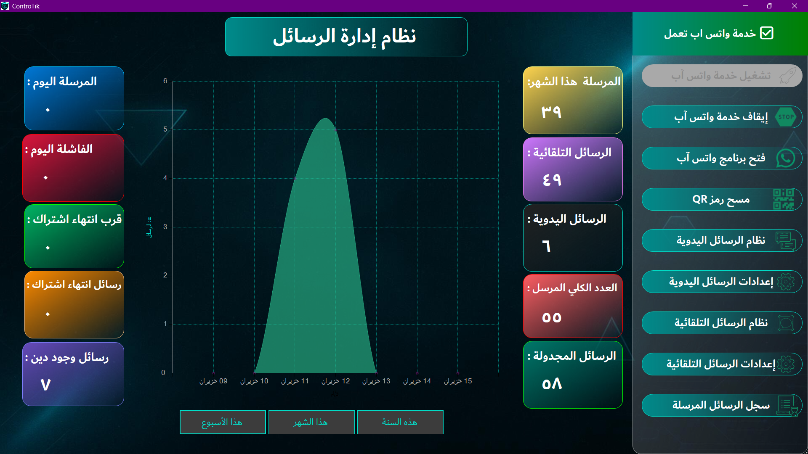
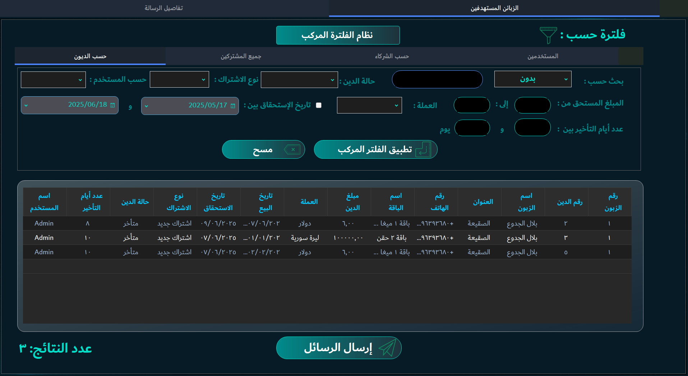
نظام تقارير واتساب الحيّة لمدير الشبكة
ControTik لا ينتظر منك أن تدخل لتفقد ما يجري… بل هو نظام حيّ ومبادر، يقوم بمراسلتك بشكل يومي عبر
واتساب لإطلاعك على حالة الشبكة دون أن تطلب.
🧠 مدير افتراضي يعمل 24/7: يعتبر نظام المراسلة عبر واتساب بمثابة موظف خاص بك، يرسل لك تقارير ذكية
تشمل كل ما يجري في شبكتك، مما يمنحك إشرافًا دائمًا حتى وأنت خارج الشبكة أو بعيد عن الحاسوب.
🔔 أنواع الرسائل المدعومة: يمكنك تخصيص الرسائل التي تصلك إلى مدير الشبكة حسب احتياجاتك، ومنها:
📆 تنبيه باشتراكات تنتهي خلال 24 ساعة
⚠️ إشعار بديون مستحقّة اليوم
📈 تنبيه بتجديد اشتراكات اليوم
📩 وجود ديون متأخرة لم يتم تحصيلها
🗂 تقرير يومي مفصّل عن كل أنشطة المستخدمين داخل النظام
🧹 تذكير دوري بعملية تنظيف قاعدة البيانات
🛠️ قابلية التخصيص: من خلال واجهة إعدادات أنيقة وسهلة الاستخدام، يمكنك تفعيل أو إيقاف أي نوع من
الرسائل بنقرة زر. يتم حفظ الإعدادات تلقائيًا، وتُطبّق فورًا دون الحاجة لإعادة تشغيل النظام.
💬 شكل التقرير: يتم إرسال التقرير برسالة منسقة تتضمن:
عدد الاشتراكات التي ستنتهي خلال اليوم
قائمة بالديون الجديدة أو المتأخرة
عدد عمليات التجديد أو الإضافة التي نفذها الموظفون
وقت وتاريخ آخر نسخة احتياطية
ملخص بأنشطة كل موظف إن كانت ميزة سجل العمليات مفعّلة
✅ ميزة احترافية: هذا النظام يحوّل مدير الشبكة من شخص ينتظر التقارير إلى شخص تُقدّم له البيانات
تلقائيًا — بدقة، انتظام، وتنظيم — تمامًا كما تفعل أنظمة البنوك والمؤسسات الكبيرة.
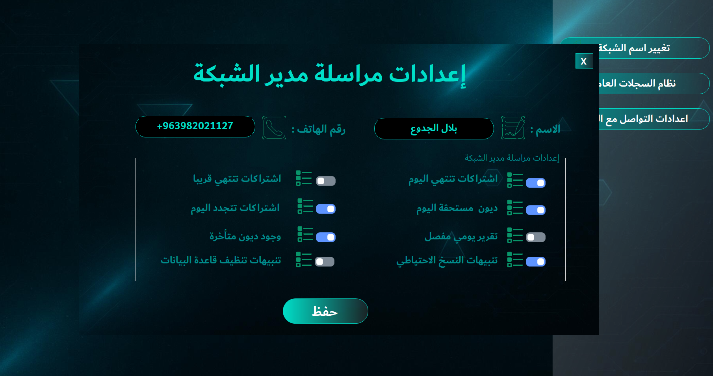
تصدير احترافي للتقارير بصيغة Excel
في ControTik، لم يعد تصدير البيانات مجرد ميزة ثانوية، بل هو جزء أساسي من تجربة الإدارة الاحترافية، مصمّم بعناية
لتقديم ملفات Excel موثوقة، آمنة، وسهلة القراءة والمشاركة.
📁 تصدير كل الأقسام: يمكن تصدير البيانات من جميع أنظمة ControTik، بما في ذلك:
المبيعات (كاش وديون)
الديون وسجلات الدفعات
المصاريف بأنواعها
الأرباح وسحوبات الشركاء
الاشتراكات المنتهية أو المتأخرة
سجلات الفلترة والرسائل
🔒 ملفات محمية ضد التعديل: يتم إنشاء ملفات Excel غير قابلة للتعديل (Read-Only)، وذلك
للحفاظ على مصداقية التقارير، ومنع أي تلاعب داخلي أو خارجي بالبيانات بعد تصديرها.
📊 شاملة وتفصيلية: يحتوي كل ملف Excel على:
البيانات الكاملة والمفصلة لكل سجل
خانة لنتيجة الفلترة (مفلتر أو غير مفلتر)
نطاق البيانات الزمني المستخدم
العملة المستخدمة إن وُجدت
رؤوس أعمدة عربية منسقة
🧠 ذكية عند الفلترة: عند تطبيق فلترة مركّبة (مثلاً ديون بالدولار خلال آخر 7 أيام)، يتم توثيق هذه
الفلترة داخل الملف في الأعلى، مما يساعدك على فهم سياق التقرير لاحقًا دون الحاجة للرجوع للنظام.
🖨️ جاهزة للطباعة أو الأرشفة: يمكن استخدام هذه الملفات مباشرة في التعاملات الإدارية، مع الشركاء،
أو حتى ضمن تقارير رسمية. الملفات قابلة للطباعة ومنسقة تلقائيًا لسهولة القراءة.
💼 أداة موثوقة لاتخاذ القرار: بفضل تنظيم الأعمدة، حماية المحتوى، ووضوح المعلومات، تصبح تقارير
Excel في ControTik أداة حقيقية لإدارة الأعمال وتحليل الأداء.
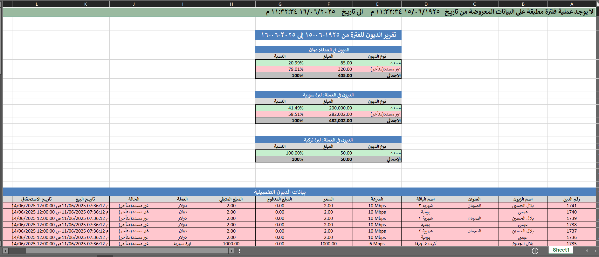
إدارة الباقات والاشتراكات
يوفر نظام ControTik واجهة متكاملة ومرنة لإدارة الباقات والاشتراكات، تتيح لصاحب الشبكة التحكم الكامل بجميع تفاصيل
العروض المقدمة للمشتركين.
🔹 إنشاء وتعديل الباقات: يمكنك إنشاء باقات متعددة تتنوع حسب:
السرعة (مثل 1 ميجا، 2 ميجا، إلخ)
حجم البيانات (مثل 5 جيجا، 10 جيجا)
الفترة الزمنية (أسبوعي – شهري – ربع سنوي...)
العملة (ليرة – دولار – تركي – عملات مخصصة)
🔹 ربط الاشتراك بالمشترك: عند اختيار باقة، يمكن ربطها بمشترك جديد أو حالي، مع تسجيل تفاصيل
العملية وتحديد وسيلة الدفع (كاش أو دين).
🔹 التجديد التلقائي: يمكن تفعيل ميزة التجديد التلقائي، حيث يقوم النظام بعد انتهاء الباقة بـ:
تجديد الاشتراك تلقائيًا بنفس الباقة
تسجيل دين على المشترك بالقيمة الجديدة
إرسال إشعار للمشترك بتفاصيل التجديد والدين
بدء حملة تذكير تلقائي يومي حتى يتم السداد
🔹 إدارة حالة الباقات: إمكانية تفعيل أو إلغاء تفعيل أي باقة مؤقتًا دون حذفها، ما يتيح مرونة في
العروض حسب المواسم أو العروض الترويجية.
🔹 عرض وتحليل الاشتراكات: يحتوي النظام على شاشة مخصصة لمراجعة جميع الاشتراكات المفعّلة أو
المنتهية، مع خيارات فلترة وفلترة مركبة، وتصدير النتائج إلى Excel محمي.
من خلال هذا النظام، يمكن لصاحب الشبكة إدارة العروض بدقة، وتحقيق أقصى استفادة من نظام الاشتراكات دون أي فوضى أو
أخطاء حسابية.
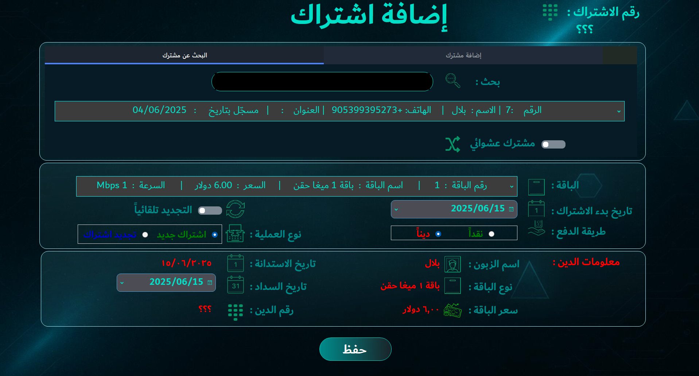
نظام النقاط وبرامج الولاء
نظام النقاط في ControTik هو أداة فعالة لتعزيز ولاء المشتركين وتحفيزهم على التجديد والدفع بانتظام. يشبه هذا النظام
ما تستخدمه كبرى شركات الاتصالات في العالم، حيث يكافَأ المشترك على كل تفاعل إيجابي مع الشبكة.
🔹 منح النقاط تلقائيًا: يتم منح المشتركين نقاطًا تلقائيًا عند تنفيذ إجراءات محددة مثل:
الاشتراك لأول مرة
تجديد الاشتراك قبل أو في موعده
سداد الديون مبكرًا
دعوة مشتركين جدد عبر رابط أو رمز دعوة
يمكن لصاحب الشبكة تحديد قيمة النقاط لكل حالة حسب العملة، مثال:
لكل 10,000 ل.س → 5 نقاط، لكل 100 ₺ → 1 نقطة
🔹 آلية الدعوة الذكية: عندما يقوم مشترك بدعوة شخص آخر للاشتراك، يتم منح النقاط للطرفين:
المشترك الجديد يحصل على نقاط ترحيبية
الداعي يحصل على نقاط مقابل الدعوة الناجحة
🔹 استبدال النقاط بالعروض: يمكن ربط النقاط بعروض تحفيزية يتم تحديدها داخل النظام، مثل:
استبدال 50 نقطة بباقات مجانية
خصومات على الاشتراكات
هدايا موسمية (باقة مضاعفة، يوم إنترنت مجاني...)
🔹 عرض رصيد النقاط: يمكن لصاحب الشبكة مراجعة رصيد كل مشترك من النقاط، وتاريخ آخر عملية كسب أو
استبدال. كما يمكن إرسال رسالة تلقائية للمشترك عند حصوله على نقاط جديدة.
🔹 هدية في ذكرى الانضمام: في كل سنة من تاريخ انضمام المشترك إلى الشبكة، يقوم النظام تلقائيًا
بإرسال رسالة تهنئة مخصصة عبر واتساب، تتضمن عبارة ترحيبية وهدية نقاط رمزية (مثل 10 أو 20 نقطة). هذه اللفتة تعزز
شعور المشترك بالانتماء والاهتمام.
🔹 إدارة كاملة ومرنة: يمكنك تعديل عدد النقاط، إعادة تعيينها، أو تعطيل نظام النقاط مؤقتًا. كما
يمكن تحديث العروض المرتبطة بالنقاط وتحديد شروط الاستحقاق.
بهذا النظام، يتحول ControTik من مجرد برنامج إداري إلى أداة ترويجية وتفاعلية، تبني علاقة طويلة الأمد بين الشبكة
والمشتركين، وتزيد من التفاعل والاستمرارية.
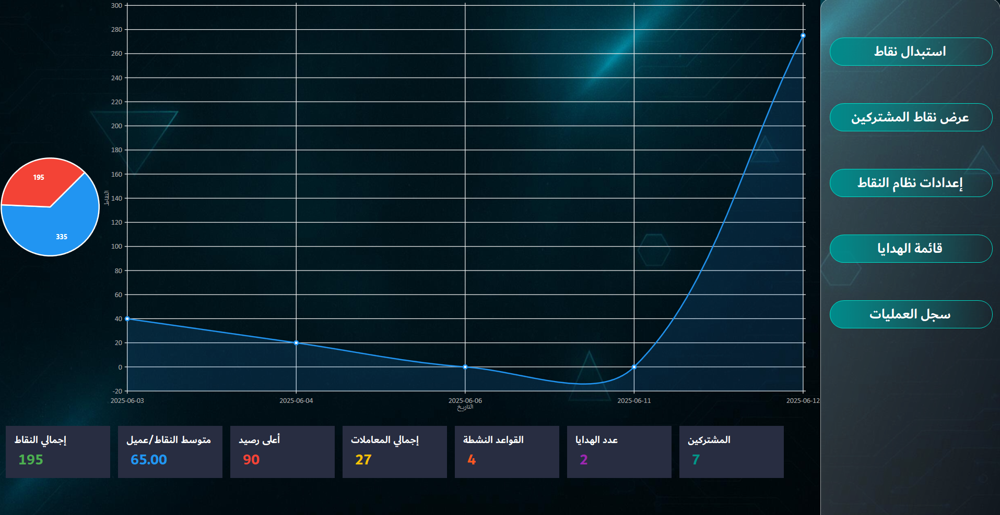
نظام المبيعات في ControTik
يقدّم ControTik نظام مبيعات دقيق وشامل، يضمن تسجيل وتحليل جميع عمليات الاشتراك والتجديد ضمن الشبكة، سواء كانت
عمليات نقدية (كاش) أو عبر نظام الدين.
🔹 تصنيف المبيعات: يتم تقسيم المبيعات تلقائيًا إلى:
مبيعات نقدية: تشمل جميع الاشتراكات المدفوعة بالكامل عند تنفيذ العملية.
مبيعات بالدين: تتضمن الاشتراكات التي تم تسجيلها مع تأجيل الدفع، ويتم ربطها بنظام الديون.
🔹 فلترة وتحليل: يمكن تصفية المبيعات وفق معايير متعددة مثل:
الفترة الزمنية (اليوم، البارحة، هذا الأسبوع، هذا الشهر، أو فترات مخصصة)
اسم المشترك أو العنوان
العملة المستخدمة (سوري، تركي، دولار...)
طريقة الدفع (كاش أو دين)
🔹 ملخص المبيعات: يمكن عرض ملخص مالي شامل دون الحاجة لتصفح كل التفاصيل، مما يسمح باتخاذ قرارات
سريعة يوميًا أو أسبوعيًا.
🔹 تصدير تقارير احترافية: يتيح النظام تصدير المبيعات إلى ملفات Excel محمية من التعديل، تتضمن:
تفاصيل العمليات
إجمالي المدخول حسب العملة
بيانات الفلترة المطبّقة
وإذا لم تكن هناك أي عملية فلترة، يتم توضيح ذلك برسالة داخل التقرير: لا يوجد أي عملية فلترة مطبقة، مع
تحديد المدى الزمني الكامل.
🔹 تكامل مع باقي الأنظمة: نظام المبيعات في ControTik مرتبط مباشرة بأنظمة:
الديون (عند البيع بالدين)
الأرباح (لحساب صافي الربح بعد خصم المصاريف)
الشركاء (لتوزيع الحصص حسب نسبتهم)
النقاط (لمنح نقاط ولاء عند البيع)
بذلك يضمن النظام دقة محاسبية عالية، وسهولة تتبع الأداء المالي لشبكتك من كافة الجوانب.
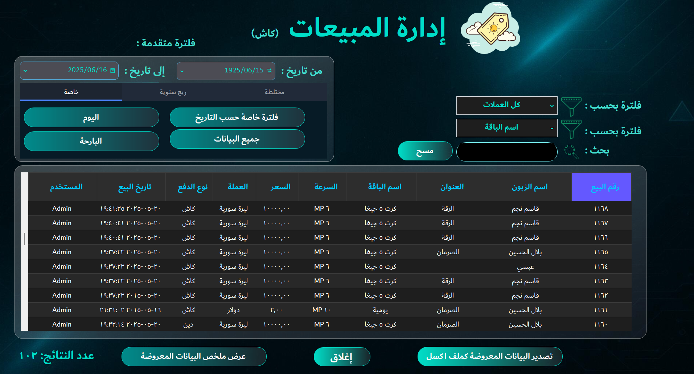
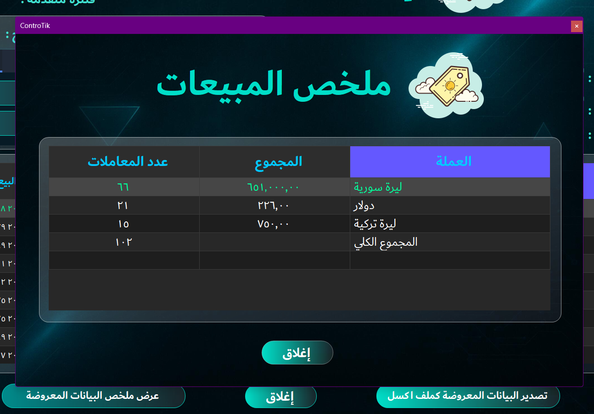
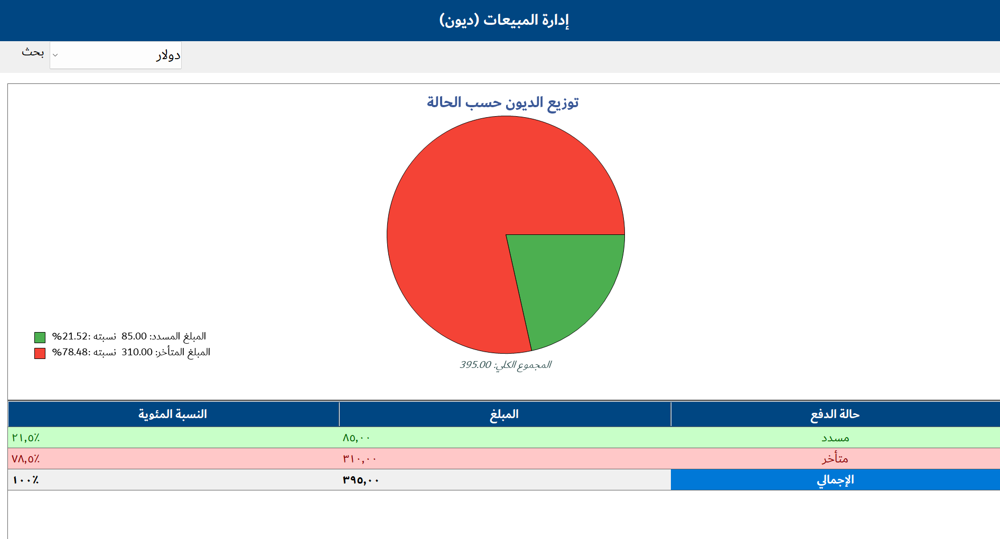
نظام المصاريف في ControTik
يوفّر نظام المصاريف في ControTik وسيلة دقيقة ومنظمة لتتبع كافة النفقات المرتبطة بتشغيل الشبكة، سواء كانت مصاريف
يومية، شهرية، طارئة، أو مستمرة.
🔹 تصنيف المصاريف: يمكن لصاحب الشبكة إنشاء أنواع مخصصة من المصاريف مثل:
إيجار المكتب أو السكن
فواتير الكهرباء أو الإنترنت
صيانة أجهزة أو شراء معدات
مصاريف إدارية أو ضيافة
🔹 تسجيل مرن: يمكن إدخال كل مصروف مع التفاصيل التالية:
النوع
اسم المصروف
المبلغ
العملة المستخدمة (سوري – دولار – تركي – عملات أخرى)
الملاحظات الإدارية أو التوثيقية
🔹 أنواع مخصصة مثل "مراعاة الزبائن": من المزايا الفريدة في ControTik إمكانية إنشاء أنواع مصاريف
مخصصة بالكامل، مثل "مراعاة زبائن"، والتي تُستخدم لتسجيل أي مبلغ تقوم بدفعه كحسومات خاصة أو مجاملات لمشتركين
محددين.
هذا النوع من التتبع يتيح لك لاحقًا معرفة:
كم بلغت إجمالي المبالغ التي قُدمت كمراعاة خلال فترة معينة
من هم الزبائن الذين تمت مراعاتهم أكثر من مرة
كيف أثّرت هذه المراعاة على أرباح الشبكة
🔹 ربط مباشر بالتقارير والأرباح: يتم خصم المصاريف تلقائيًا من إجمالي المبيعات عند احتساب صافي
الأرباح، وتظهر بشكل واضح في لوحة التحكم، وفي تقرير الأرباح المفصّل لكل عملة.
🔹 فلترة المصاريف: يمكن فلترة المصاريف حسب:
نوع المصروف
الفترة الزمنية
العملة
القيمة بين حدين
🔹 تصدير احترافي: يدعم النظام تصدير جميع المصاريف إلى Excel محمي غير قابل للتعديل، مما يضمن
المصداقية عند مراجعة البيانات المالية أو مشاركتها مع الشركاء.
🔹 سهولة وسرعة: سواء كان المصروف صغيرًا كـ \"فنجان قهوة\"، أو كبيرًا كشراء راوتر احترافي، يتم
تسجيله بثوانٍ، وتحليله بدقة في تقارير الأرباح.
من خلال هذا النظام، تصبح إدارة الأموال أكثر شفافية واحترافية، وتقل احتمالات النسيان أو الخطأ في الحساب.
يمكنك أيضًا إنشاء أنواع أخرى مثل: "ضيافة"، "صيانة عاجلة"، "مصاريف دعاية"، وغيرها بحسب احتياجك، ما يمنحك مرونة
فائقة في ضبط الحسابات وتحقيق شفافية كاملة.
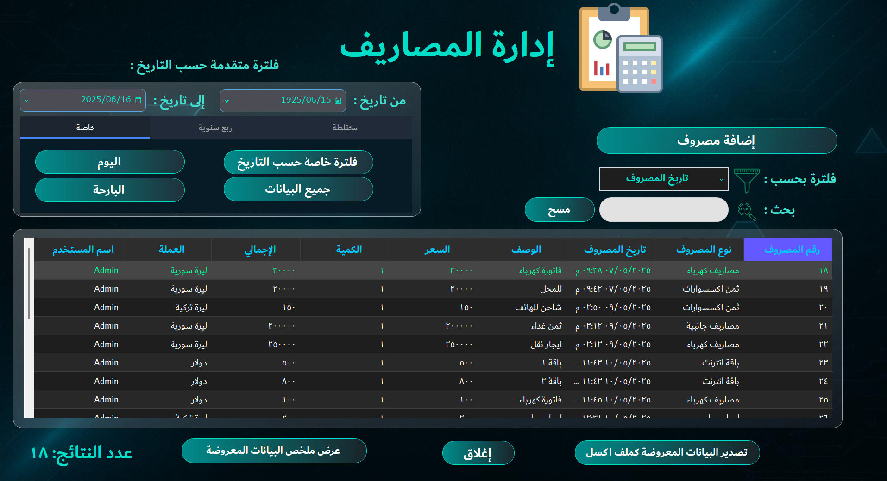
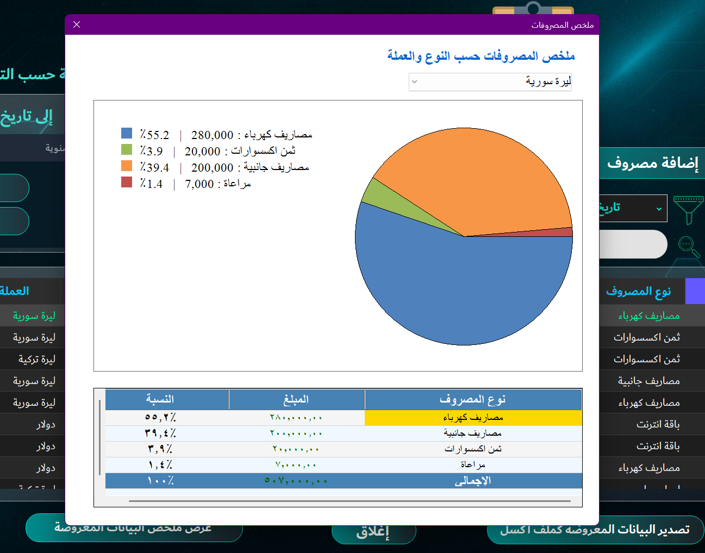
نظام الأرباح وتوزيع الحصص في ControTik
تم تصميم نظام الأرباح في ControTik ليمنح أصحاب الشبكات وشركاءهم تجربة مالية منظمة ومحكمة، تشبه ما تقدمه أنظمة
البنوك والشركات المحترفة.
🔹 حساب الأرباح بدقة: يتم احتساب صافي الأرباح تلقائيًا وفق العملة، وذلك بعد خصم المصاريف من
إجمالي المبيعات (نقدًا). يُعرض الربح مفصلًا حسب العملة: ليرة، دولار، تركي أو أي عملة مخصصة.
🔹 توزيع تلقائي لحصص الشركاء: لكل شريك نسبة محددة يتم تعيينها مسبقًا، ويتم توزيع الأرباح بناءً
عليها بشكل تلقائي لكل عملة على حدة. لا يمكن لأي شريك سحب أكثر من حصته، ويظهر له دائمًا:
إجمالي حصته الحالية
المبلغ الذي سُحب سابقًا
الرصيد المتبقي المتاح للسحب
🔹 سجل سحب دقيق، يشبه الأنظمة المصرفية: كل عملية سحب أرباح يقوم بها شريك يتم:
تسجيلها تلقائيًا باسم الشخص الذي نفذ السحب
تحديد التاريخ، العملة، المبلغ، والملاحظات
إرسال إشعار فوري على واتساب للشريك يحتوي على تفاصيل العملية
وكأنك تدير محفظة بنكية داخل النظام، يُسجل فيها كل سحب ويتم إخطار صاحبه فورًا، مما يمنع الخلافات
ويعزز الشفافية الكاملة بين الأطراف.
🔹 لوحة تحكم احترافية: يعرض النظام لوحة رسومية متكاملة تشمل:
مخطط زمني يُظهر تطور الأرباح والمصاريف شهريًا
مخطط دائري يوضّح نسبة كل شريك من الأرباح
جدول تفصيلي بعمليات السحب الأخيرة
يمكن أيضًا فلترة التقرير حسب الشريك أو العملة أو الفترة الزمنية، مما يمنحك رؤية تحليلية دقيقة لكيفية تطور الأداء
المالي للشبكة.
ControTik لا يحسب فقط… بل يوثق، يحلل، ويُبلغ.
لتكون أنت وشركاؤك دائمًا على دراية، بكل شفافية، دون الحاجة لأي جداول خارجية أو حسابات يدوية.
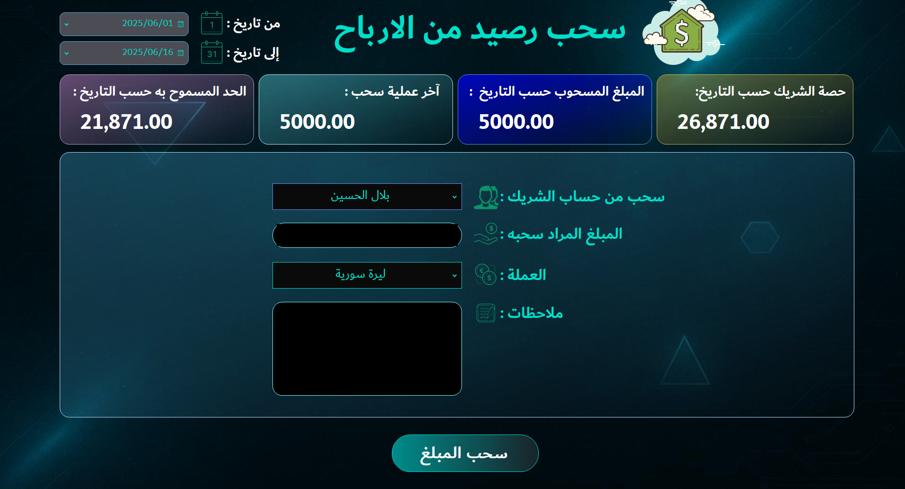
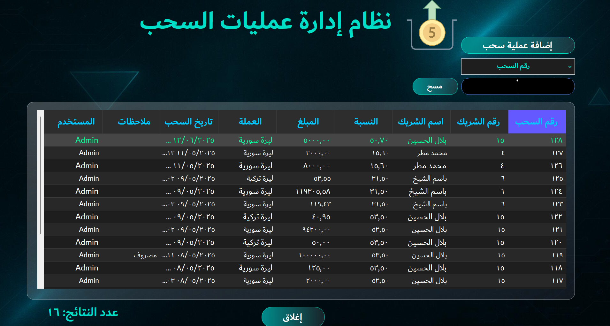
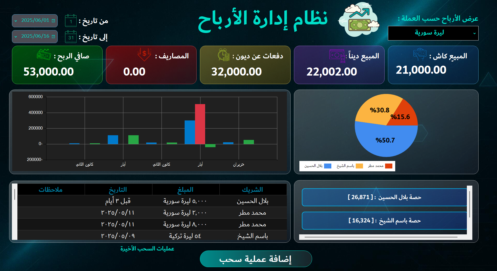
نظام المستخدمين والصلاحيات
يوفّر ControTik نظامًا متقدمًا لإدارة المستخدمين، يتيح لك إنشاء حسابات متعددة لأفراد فريقك، وتحديد صلاحيات دقيقة
لكل مستخدم بحسب مهامه الفعلية، مع سجل شفاف لتتبع كل عملية تتم داخل النظام.
🔹 إنشاء مستخدمين غير محدود: يمكنك إنشاء عدد غير محدود من الحسابات للمستخدمين ضمن النظام، مع
إدخال:
اسم المستخدم
كلمة المرور
رقم الهاتف (اختياري للتنبيهات)
الصلاحيات المعطاة بدقة عبر النظام
🔹 نظام صلاحيات دقيق بتقنية Bitwise: يتيح ControTik تحديد صلاحيات المستخدمين وفقًا لنظام مدمج
يستخدم Bitwise Permissions، مما يمنح مرونة غير مسبوقة، ويمكنك من:
السماح لمستخدم بإدارة الاشتراكات فقط دون الاطلاع على الأرباح
منع التعديل على المصاريف مع السماح بالإضافة فقط
إعطاء الصلاحية لعرض التقارير دون القدرة على التعديل أو الحذف
تحديد من يحق له إرسال الرسائل أو سحب الأرباح أو إضافة ديون
🔹 سجل لكل حركة: يتم تسجيل كل عملية يقوم بها أي مستخدم في النظام، مع تحديد:
اسم المستخدم
العملية التي قام بها
التاريخ والوقت
عدد السجلات المتأثرة أو المعدلة
ويتم يوميًا توليد تقرير شامل يحتوي على كافة الأنشطة التي قام بها المستخدمون خلال اليوم، يتم إرساله تلقائيًا إلى
صاحب الشبكة عبر واتساب. هذا التقرير يُعد أداة رقابية عالية الفعالية تتيح للمدير متابعة حركة النظام بدقة، واتخاذ
إجراءات فورية عند الحاجة.
هذا يمنحك إمكانية مراجعة تاريخ الأنشطة والتحقق من أي تعديل أو خطأ بسهولة، مما يعزز الرقابة الداخلية.
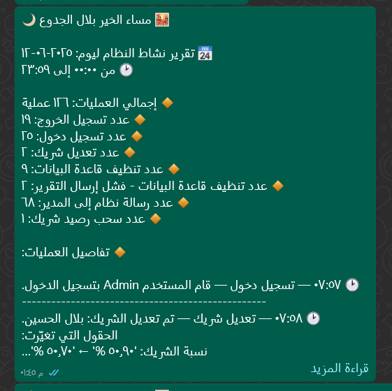
🔹 إمكانية إيقاف وتعديل المستخدمين: في أي وقت، يمكنك تعطيل حساب أي مستخدم، أو تعديل صلاحيته، أو
تحديث بياناته بسهولة تامة، دون الحاجة لحذفه.
من خلال هذا النظام، يمكن لصاحب الشبكة إدارة فريقه باحترافية عالية، وتوزيع المهام بشكل دقيق، دون المساس بسرّية
المعلومات أو تعريض البيانات المالية للخطر.
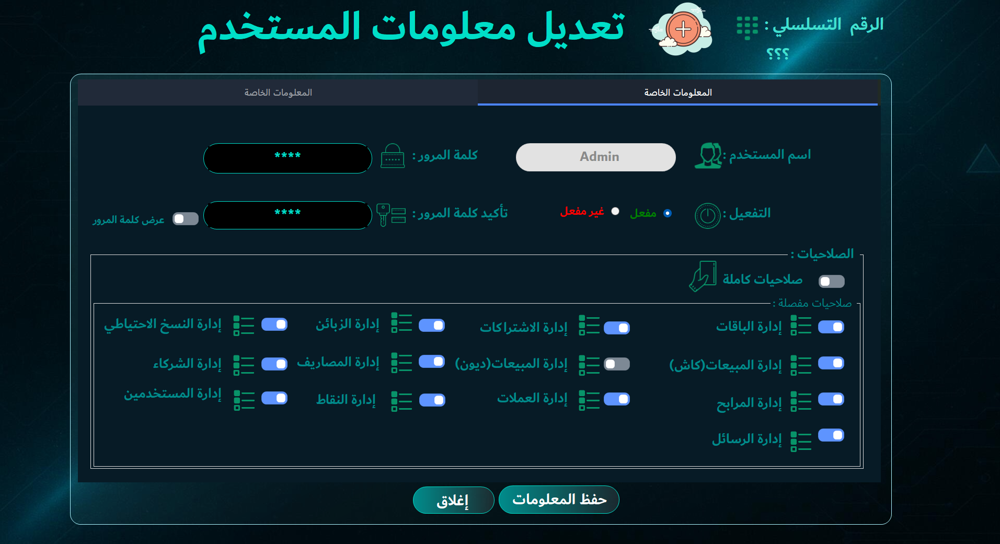
نظام النسخ الاحتياطي التلقائي على Google Drive
يوفّر ControTik نظام نسخ احتياطي ذكي ومرن، مصمم لحماية بيانات شبكتك وتأمينها ضد الفقدان أو الأعطال، وذلك من خلال
التكامل المباشر مع Google Drive.
🔹 نسخ تلقائي بالكامل: يمكنك جدولة النسخ الاحتياطي ليتم تلقائيًا حسب الخيار الذي يناسبك:
نسخ يومي (كل صباح مثلاً)
نسخ كل ساعة
نسخ عند الطلب فقط
🔹 رفع النسخة مباشرة إلى Google Drive: يتم حفظ نسخة مشفّرة من قاعدة البيانات بشكل تلقائي إلى حساب
Google Drive المرتبط، في مجلد مخصص يمكن الوصول إليه لاحقًا بسهولة.
🔹 مرونة في المسار والاسم: يمكنك تخصيص اسم الملف، ومجلد الحفظ، مما يسمح لك بإدارة نسخك الاحتياطية
باحتراف.
🔹 استرجاع بنقرة واحدة: في حال حدوث أي مشكلة في الجهاز أو النظام، يمكنك من داخل ControTik استرجاع
أحدث نسخة احتياطية محفوظة على Google Drive بضغطة زر واحدة، دون الحاجة لأي إعدادات معقدة.
🔹 أمان عالي: يتم تشفير النسخة قبل رفعها، لضمان أن بياناتك محفوظة بشكل آمن على السحابة، ولا يمكن
الوصول إليها إلا من خلالك.
هذا النظام يمنحك راحة بال حقيقية، ويجعل إدارة المخاطر في شبكتك احترافية تمامًا كما في كبرى المؤسسات.
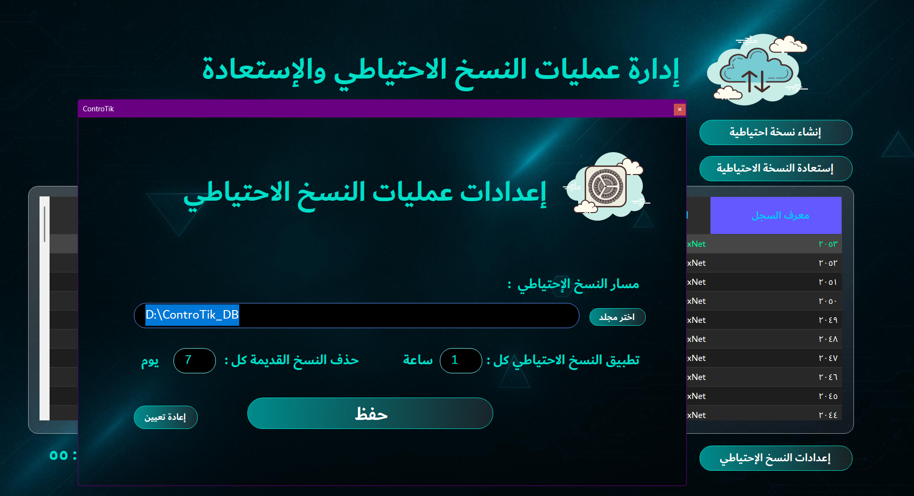
مرونة التعامل مع العملات
يدعم ControTik نظامًا مرنًا وشاملًا للتعامل مع العملات المتعددة، مما يمنح أصحاب الشبكات القدرة على البيع، التحصيل،
إدارة الأرباح والمصاريف بكل سهولة، بغض النظر عن العملة المحلية أو الأجنبية المستخدمة في الشبكة.
🔹 عملات متعددة افتراضيًا: يدعم النظام بشكل أساسي الليرة السورية (SYP)، الليرة التركية (TRY)،
والدولار الأمريكي (USD)، مع إمكانية إضافة أي عملة أخرى حسب الحاجة مثل اليورو أو الدينار.
🔹 اختيار العملة عند كل عملية: سواء كنت تسجّل اشتراكًا، مصروفًا، سحب أرباح، أو دين، يمكنك تحديد
العملة المناسبة بكل عملية على حدة، مما يضمن دقة الحسابات المالية وعدم الحاجة إلى تحويلات يدوية.
🔹 تقارير مالية مفصلة لكل عملة: تُعرض كافة التقارير (المبيعات، المصاريف، الأرباح، الديون، سحوبات
الشركاء) حسب العملة، مما يمنحك رؤية واضحة لأداء الشبكة في كل عملة بشكل مستقل.
🔹 حساب الأرباح وتوزيع الشركاء حسب العملة: يتم حساب الأرباح لكل عملة بشكل مستقل، ثم تُوزّع على
الشركاء وفق نسبهم الخاصة بكل عملة، ما يضمن العدالة والشفافية في الربح دون تداخل بين العملات.
🔹 تقييد السحب بالعملة: لا يمكن لأي شريك سحب أكثر من حصته المتوفرة ضمن عملته المحددة، ويتم إرسال
إشعار تلقائي عند كل عملية سحب.
هذا التكامل بين العمليات المتعددة والعملات المختلفة يجعل من ControTik نظامًا مثاليًا للشبكات التي تتعامل بعملات
متنوعة، ويضمن ضبطًا محاسبيًا دقيقًا ومتكاملًا دون أي أخطاء أو التباس.
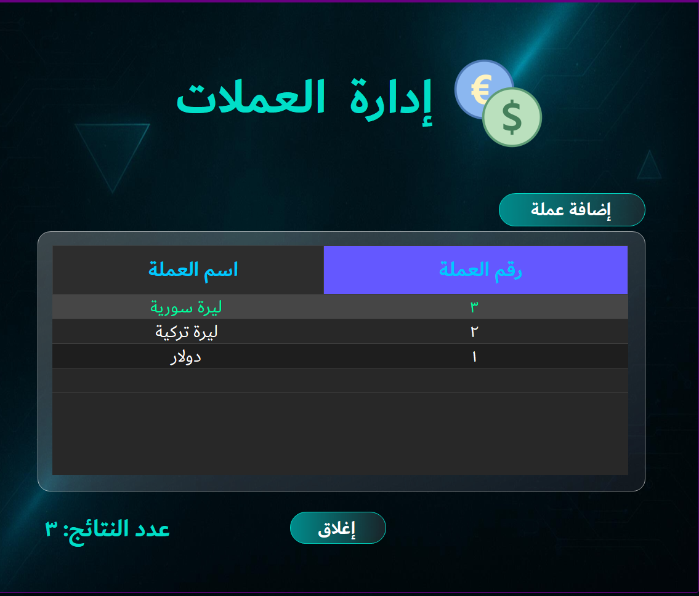
الأمان والتراخيص
حرصًا على حماية استثمارك وضمان خصوصية بيانات شبكتك، يأتي ControTik مزودًا بنظام تراخيص ذكي ومشفّر بالكامل، يجعل
تشغيل البرنامج محصورًا بالأجهزة المصرّح بها فقط.
🔐 ترخيص مشفّر بهوية جهاز (HWID): يتم ربط كل نسخة من البرنامج بجهاز معيّن باستخدام معرف فريد
(HWID)، ما يمنع تشغيلها على أي جهاز آخر دون إذن مسبق.
🔄 تفعيل سريع وآمن: يتم إرسال طلب تفعيل الترخيص عبر الإنترنت إلى سيرفر التراخيص الآمن، ويتم إصدار
الترخيص الرقمي خلال ثوانٍ، دون الحاجة لأي تدخل يدوي أو ملفات حساسة.
🛡️ مراقبة مستمرة: يسجّل النظام كل محاولة تشغيل، تفعيل، أو نقل غير مصرح به، ويرسل تنبيه فوري
للمطوّر أو للمالك إن وُجدت محاولة خرق أو نسخ غير مشروع.
📉 إيقاف تلقائي عند انتهاء الترخيص: في حال انتهاء فترة الترخيص أو حدوث خرق أمني، يتوقف البرنامج
عن العمل ويظهر إشعار للمستخدم يوضح السبب، مع إمكانية تجديد الترخيص بسهولة.
🧪 دعم النسخ التجريبية: يمكن إنشاء تراخيص مؤقتة (تجريبية) بمدة محددة أو بعدد مشتركين معين، لتوزيع
نسخ تجريبية للمهتمين بطريقة آمنة وخاضعة للرقابة.
هذا النظام يجعل من ControTik منصة آمنة لا يمكن قرصنتها أو تشغيلها خارج نطاق الأجهزة المرخصة، مما يمنحك راحة البال
وثقة تامة بأن بياناتك وتطبيقك في مأمن من التلاعب.
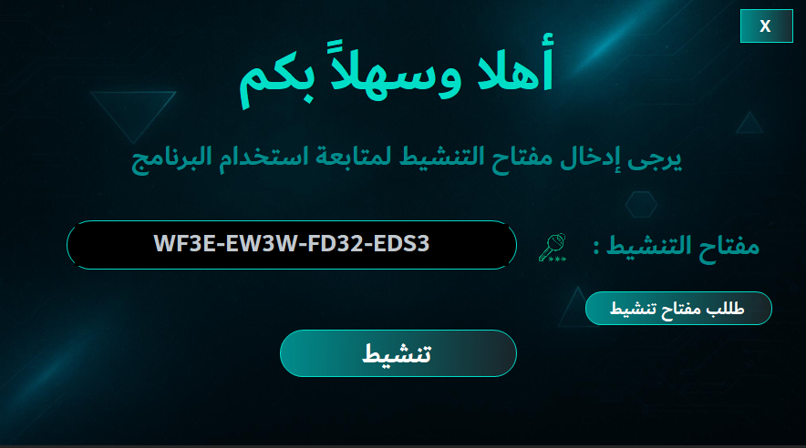
نظام مرن قابل للتخصيص
ControTik ليس مجرد برنامج ثابت، بل هو منصة ذكية قابلة للتكيّف مع طبيعة عملك ومتطلباتك الدقيقة، سواء كنت تدير شبكة
صغيرة أو مؤسسة كبيرة.
🧩 بناء ميزات خاصة بك: يمكنك طلب تطوير ميزات مخصصة بالكامل وفق احتياجاتك، مثل إضافة نظام ولاء
جديد، ربط مع أدوات خارجية، تعديل طريقة حساب الأرباح، أو إنشاء تقارير بصيغة معينة.
🎨 تخصيص الواجهات: تعديل شكل لوحة التحكم، ألوان النظام، ترتيب العناصر، أو حتى اختيار تصميم يتناسب
مع هوية علامتك التجارية.
🔔 تخصيص التنبيهات: يمكنك تحديد متى وكيف يتم إرسال التنبيهات سواء للمشتركين، الشركاء أو الموظفين،
مع إمكانية كتابة الرسائل بصيغة مخصصة لكل حالة.
📈 توسيع النظام: مع تطور شبكتك، يمكن إضافة وحدات جديدة للنظام مثل: بوابة زبائن، تقارير ميدانية،
نقاط بيع، أو تكامل مباشر مع أجهزة MikroTik أو سيرفرات Radius.
🔄 النظام يتطور معك: يتم تحديث ControTik باستمرار، ويمكنك أن تكون جزءًا من عملية التطوير عبر
اقتراح ميزات أو أفكار جديدة ليتم تنفيذها في الإصدارات القادمة.
💼 خدمة التخصيص المدفوعة: إذا كان لديك فكرة أو طريقة عمل مختلفة كليًا، يمكن تنفيذ نسخة خاصة بك من
ControTik تفصيلًا، لتكون أداة عمل حصرية لمشروعك أو شبكتك.
ControTik ليس قالبًا جاهزًا، بل هو شريك تقني يفهمك ويتكيّف معك.
💡 جاهز لتكون شبكة احترافية؟
توقف عن إدارة شبكتك بالعشوائية، وابدأ اليوم باستخدام ControTik — النظام الذي صُمم خصيصًا لك كصاحب
شبكة لتعيش تجربة إدارة لا مثيل لها:
✅ رؤية شاملة لكل مشترك، اشتراك، دفعة، ودين
✅ رسائل تلقائية احترافية كتلك التي تستخدمها شركات الاتصالات
✅ تقارير مالية دقيقة ومحمية بصيغة Excel لإدارة الأرباح والشركاء
✅ نظام تراخيص آمن يحمي استثمارك ويمنع التلاعب
✅ لوحات تحكم فاخرة ومريحة للعين لتقودك بسرعة نحو القرار الصائب
لا مزيد من الفوضى، لا حاجة للورقيات أو الحساب اليدوي...
ControTik هو شريكك الذكي الذي يعمل معك 24/7 لتجعل شبكتك تنمو بثقة
واستقرار.
💎 جرب النسخة التجريبية أولاً، واكتشف بنفسك الفرق الذي يصنعه ControTik.

 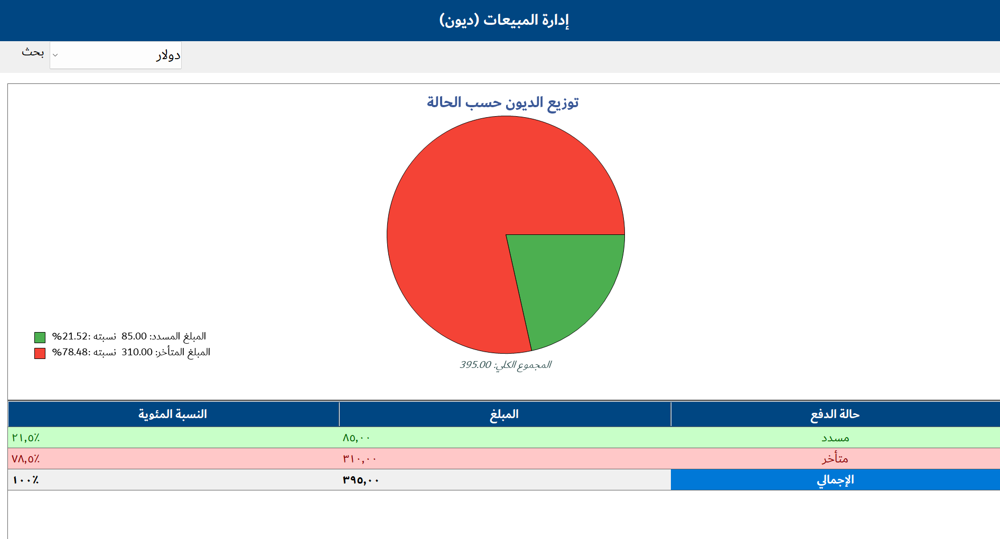
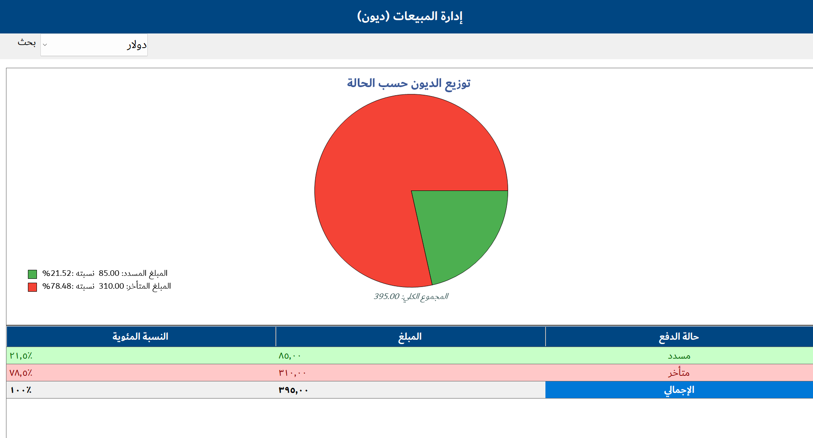